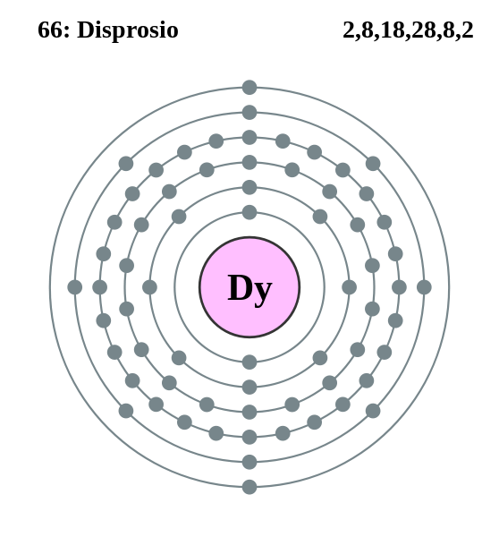

|
|
||
|
DISPROSIO El disprosio se descubrió en 1886, pero ni el metal ni su óxido estuvieron disponibles hasta 1950. Se produce naturalmente con otros metales de tierras raras en una gama de minerales. Este elemento tiene un lustre metálico brillante y es relativamente estable a temperatura ambiente. El disprosio se puede cortar con un cuchillo y puede procesarse con máquinas sin producir chispas si no se sobrecalienta. Sus propiedades físicas pueden verse afectadas de manera significativa por cantidades muy pequeñas de impurezas. No existen muchas aplicaciones para el disprosio, pero pueden dársele usos metalúrgicos en aplicaciones de control nuclear o para aleaciones especiales de acero inoxidable. Cuando se combina con otros metales de tierras raras, se usa en materiales para láseres. |
 |
DATOS Número Atómico: 66 Peso Atómico: 162.5 Electronegatividad: 1.22 Configuración Electrónica: 4f106s2 Estados de Oxidación: +3 No. de Electrones de Valencia: 2 |